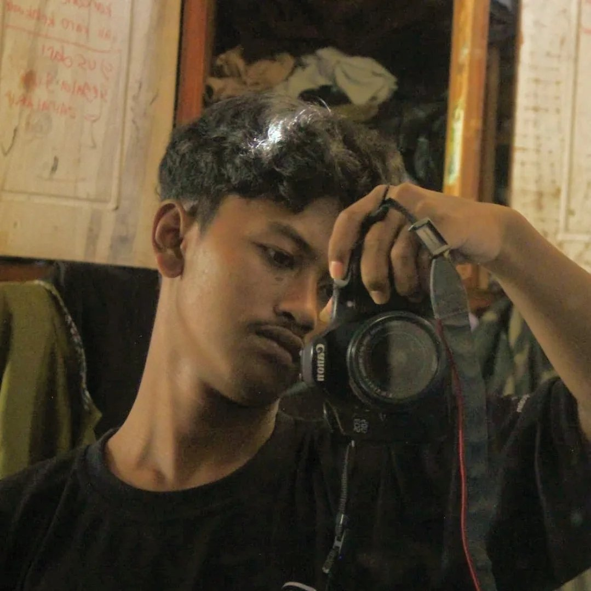

Saya adalah seorang pemimpi besar yang hidup di antara imajinasi kreatif menggambar dan semangat kompetitif sepak bola. Saya memiliki urgensi yang kuat untuk meraih kesuksesan di usia muda, sebelum waktu dan fisik saya terbatas. Meski saya menyadari adanya sisi pemalas dalam diri, saya tidak menyerah padanya; saya sedang dalam proses berbenah karena saya ingin menaklukkan semua mimpi saya hingga tidak ada lagi yang tersisa untuk diimpikan.

Membangun ekosistem informasi melalui media sosial dengan fokus pada percepatan edukasi diri.
Fokus pada pencarian pengalaman serta bekal yang harus didiapkan.
"Belajar beradaptasi dengan sistem yang terus berubah dan melakukan koreksi cepat."
Menyerap ratusan informasi harian dari media sosial, mengubah data mentah menjadi pengetahuan yang bisa dieksekusi.
Gue adalah seorang visual explorer yang hobi menggambar dan bermain bola yang paham arti kompetisi. Fokus gue sekarang cuma satu: sukses selagi muda sebelum terlambat.
Gue percaya bahwa rasa malas adalah musuh yang harus dibenahi setiap hari, karena mimpi gue terlalu besar untuk sekadar jadi bunga tidur—gue ingin mewujudkan semuanya sampai nggak ada lagi yang tersisa buat dimimpikan.
Social media